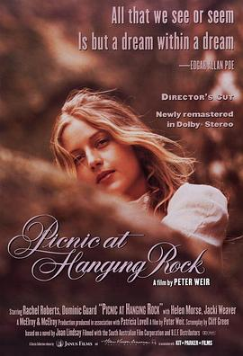

悬崖上的野餐 / Picnic at Hanging Rock
又名：吊人岩的野餐 / 悬岩上的野餐 / 悬崖下的野餐
马克一波oz movie
作品信息
| 导演 | 彼得·威尔 |
| 编剧 | 琼·林赛 / 克利夫·格林 |
| 主演 | 瑞秋·罗伯茨 / 威文·格雷 / 海伦·摩斯 / Kirsty Child / Tony Llewellyn-Jones / 杰基·韦佛 / Frank Gunnell / 安·路易斯·兰伯特 / 凯伦·罗宾逊 / Jane Vallis / Christine Schuler / Margaret Nelson / Ingrid Mason / Jenny Lovell / Janet Murray / 加里·麦克唐纳德 / 马丁·沃尔汉 / Olga Dickie / 多米尼克·格尔德 / 约翰·贾瑞特 |
| 类型 | 剧情 / 悬疑 / 惊悚 |
| 制片国家/地区 | 澳大利亚 |
| 语言 | 英语 / 法语 |
| 上映日期 | 1975-08-08 |
| 片长 | 108分钟 |
| IMDb | tt0073540 |
说过什么
2022-07-31 12:23:59
广播 · 想看
马克一波oz movie
最后一次看到是 2026-08-01T11:08:41+10:00 · 豆瓣原页